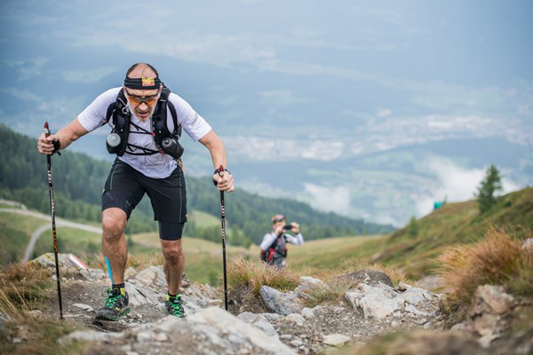
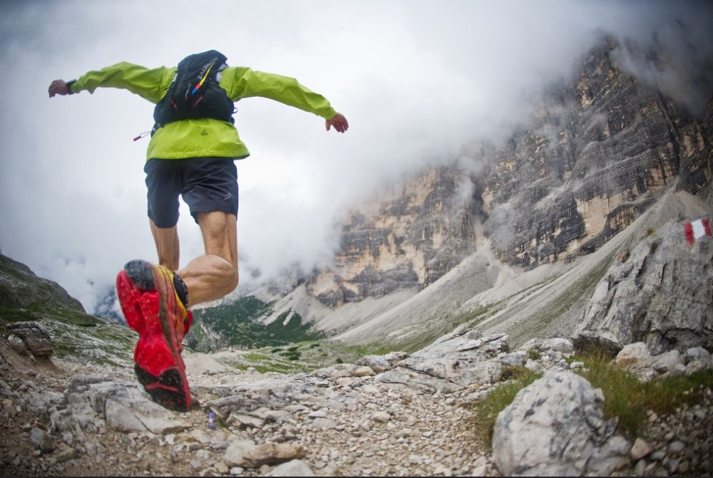

Un recorregut espectacular: Descobreix els senders naturals que serpentegen per la Serra de Caballs, una regió plena de biodiversitat i paisatges espectaculars. Gaudeix de les vistes panoràmiques dels turons, valls i boscos mediterranis que faran d’aquesta experiència una autèntica aventura.
Benvinguts a la Cursa Rodacaballs
Descobreix els paisatges espectaculars de la Serra de Caballs mentre poses a prova els teus límits en aquesta emocionant cursa de muntanya.
Què t’espera?

Punts d’avituallament: Al llarg del recorregut trobaràs diversos punts d’avituallament amb opcions dolces i salades per recarregar energia. Aquests inclouen barretes energètiques, fruita fresca, fruits secs, snacks salats i opcions de menjar vegà. A més, hi haurà aigua, begudes isotòniques i sucs naturals per mantenir-te hidratat en tot moment.

Categories per a tots: Aquesta cursa està pensada per a tothom! Tant si ets un corredor experimentat que busca superar nous reptes com si ets un principiant que vol gaudir d’una activitat saludable a la natura, tenim una modalitat per a tu. Tria entre el trail de 10 km o el trail de 20 km, segons el teu nivell i preferències.
Informació de l'Esdeveniment
- Data: 20 d’abril de 2024
- Ubicació: Serra de Caballs, Catalunya
- Modalitats: Trail de 10 km, Trail de 20 km